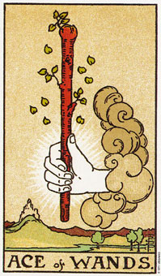

权杖王牌象征着开始执行一项方案或旅行。
权杖王牌象征一个计划强而有力的开始，代表着手新计划的渴望、力量与勇气。这张牌推出已经开始的行动，而且一定会产生具体的结果，与纸上谈兵完全不同。
王牌出现在采取行动的时候，他们不是代表任何的计划于决定， 而是发动新事物的具体行为。
从云里探出一只手，握住了权杖。权杖被画成一种活的、成长的东西，在背景里的城堡表示目的地。权杖被画成一种活的形式，反映权杖类型面对各种日常事务的活力与热情。
权杖类型在目标与挑战上成长茁壮， 并以其狂热追求潜在的胜利。追求值得追求的目标，会产生一种目的感。纸牌上， 晴朗的天空显示这一时刻，你的目的充满清晰的光景。王牌不是要你去思考或感觉，而是去做。它可以表示一段具有力量、权力，以及充沛的性与肉体精力的时间。它是一张代表旅行与移动的牌，也常常表示一种对生活的热爱。
当权杖王牌出现在一副牌里的时候，很少有限制。
大体上的意义
在平常时，权杖王牌表示实践计划的能量和欲望。我的一个顾客叫大卫，他来找我解牌的时候，已经存了十五个月的钱，计划和女友玛琳到加拿大和欧洲旅行。然而他们过去一直花时间在工作存钱，使两人的关系受阻。玛琳最近碰上另一个男人，而离开大卫，和新伴侣同居。
大卫虽颓丧但并没有放弃原本计划的旅行，因为他已经投入非常多的希望在这一次的旅行。
王牌出现在他的第一副牌，我告诉他可能即将成行。这表示他的计划将付诸具体行动。六个礼拜后，我收到一张明信片，他说他将离开多伦多前往伦敦。在牌形中，王牌代表行动，大卫也如同权杖王牌所显示的--真的完成了他的计划。
两性关系上的意义
权杖王牌暗示一段两性关系的开始，它可能是一段新的开始，或是既存关系的一个新阶段。它暗示某种肉体关系的开始，或某些伴随着新阶段而来的肉体活动。它也可意指旅游，然而在两性关系的算法当中，这个旅游是和两性关系相关的。
最近在我的一副问两性关系的牌中，代表过去十八个月的位置上看到了权杖王牌。在进一步的询问之后发现了，这次旅游所透露的线索是，这女人在前往苏格兰的旅途当中遇到了一名男子，而她要问的是他们之间的关系。
倒立的权杖王牌
当权杖王牌是以上下相反对着分析师(亦即，它是倒过来的)，那么塔和整理的王牌在意义上则有些许的差异。它依然暗示这是个着手新方案的时机，然后过程会较正立的王牌稍微缓些。
这可能是由于精力分散到其他方案或挑战上，或者是因为先前的方案尚未完成。当王牌以倒立出现时，它意味着前面的状况要先加以解决， 然后新的企图才可能被实现。
例如，卡尔想要开始进行一项令人兴奋的新方案，而且他的感情深具感染力。它设计了一个小机器，而且正在找有兴趣的伙伴来协助他推广这项产品。问题是，这是他十个月内的第四项发明了，而且前三项都还没有通过概念阶段。他还在一家实验室当全职的助理，所以发展自己的方案的时间相当有限。在他的例子当中，权杖王牌的倒立意味着它需要去完成或放弃某些其他方案，或是辞去他的全职工作，然后他才可能真正开始去实现他的计划。
王牌倒立的另一个意义是延缓旅行的计划或行程的结束。例如，最近你可能刚从一趟旅行中回来，而王牌倒立就是说，你的生活又再度安顿了下来。
权杖王牌的倒立也可能是说，由于有太多难以驾驭的精力而使预期中的结果延缓出现。它可能意味着你的精力及热情需要被约束，否则你将会进行很多方案，而完成的确实寥寥无几。